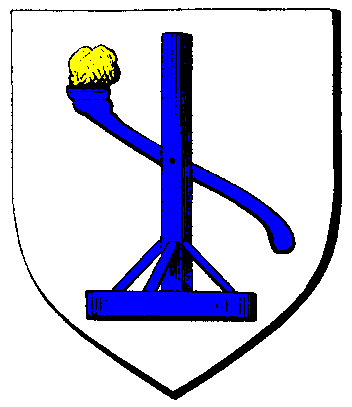

|

|
Das schwarze Brett
|
|
| Übersicht,
Allgemeines |
|
Karawanen
|
Schinderhannes
 |
Servus,
das soll jetzt kein Heul-Thread werden, ich will nur mal Meinungen anderer Spieler zum Thema Karawanen einholen.
Das Karawanen durch andere Spieler und besonders durch Monster bedroht sind und daher nicht alle Karawanen durchkommen, ist absolut okay.
Nach den Erfahrungen, die ich nun aber machen durfte, ist dass zumindest bei uns KEINE Karawane eine Chance hat. Wir haben in den letzten 14 Tagen 20 Karas gestartet, von denen jede von Stubies bzw. Baby-Drachen gefressen wurde.
Wie gesagt, eine gewisse Ausfallquote ist sicherlich absolut okay. Aber bei 100% machen Karas einfach keinen Sinn.
Daher mal meine Frage : Kann es sein, dass von der SL vor geraumer Zeit, als die Scherbe noch sehr gut bevölkert war, einfach mal ein fester Wert von "Karawanenmonstern" eingebaut wurde und dieser feste Wert aktuell nicht mehr der noch übrig gebliebenen Spielerzahl entspricht ?
|
22.04.15 9:38

 |
|
VitaminC
 |
Feste Werte? Was? Unverschämt :D
Also die SL hat da irgendwann die heftigkeit der Drachen und Stubies schon eingeführt... also noch der Hain Massig Karas hat laufen lassenn... Hat aber auch als die Spielerzahlen runter geingen gegen gesteuert...
Zitat:
06.02.13
Eine Scherben-Richtlinie fordert Ruhezeiten für Monster aller Art. Zwischen 24:00 und 6:00 Uhr werden sich Monster nun nicht mehr bewegen. Sollte ein Monster jedoch in seiner Ruhe gestört werden, sind Angriffe durchaus noch möglich. Beispiel wären hier zB Nestwachen, Nestbesuche oder Essen-auf-Hufen auf Monsterfeldern.
|
22.04.15 10:24
|
|
Kurax Glutfaust
 |
Das Zitat hat nichts mit der Frage oder der Antwort zu tun. Die Nachtruhe erleichtert die Wache, aber es sind tatsächlich ne Menge Jäger unterwegs.
Wenn bei uns mal ne Kara gestartet wurde, waren binnen 24 Stunden meist Pulks von 6-8 Drachen und 3-4 Schlangen unterwegs, Stubenfliegen gibt´s bei uns nicht, wären ja auch zu einfach für Noobs. ^^
Karas kann man nur betreiben, wenn man genug Leute hat, die ein Auge auf die Umgebung werfen und vor allem auch eingreifen können, sprich sich nicht von Jungdrachen in den Tempel jagen lassen.
Ich hab´s aufgegeben. Erfolgsquote 0%, also keine mehr laufen lassen.
Karas sind ein Spielelement, welches dazu taugt, den Abstand zwischen Altchars und Noobs zu maximieren, wenn man sich nicht gerade irgendwo ins gemachte Nest setzen kann.
Aber das ist ok so. Man muss sich halt Gedanken machen, wie man sie profitabel betreiben könnte. Das bleibt eine Weile ne echte Herausforderung. ;) |
22.04.15 20:12
|
|
Fabius Alagos
 |
Ich hab auch mal versucht ne Karawane zwischen der Hafenbastei und ner Nachbarinsel laufen zu lassen, da ist eine von gefühlten 100 angekommen.
Ich bin da alles andere als ein Experte, meine aber in Erinnerung zu haben, dass die Drachen, Schlangen und Stubis unsichtbare Wandernester haben. Wenn da einige in der Nähe der Karawanenstrecke sind, ist es hart.
Generell würde ich behaupten, dass eine Karastrecke nur dann möglich ist, wenn es einige sehr aktive Spieler gibt, die immer wieder reingucken und das Monsterzeugs beseitigen...die Dinger einfach mal laufen lassen funktioniert nicht. |
22.04.15 20:34
|
|
Nariel S. Cobar
 |
Richtig, von den 3en gibt es unsichtbare Wandernester. |
22.04.15 22:12
|
|
Frathag Graubart
 |
Da Karawanen dafür genutzt wurden die Überproduktion zu verbrennen und dafür seltene Waren ins Spiel zu bringen, haben sie das Spielgleichgewicht extrem verzerrt. Da sollte eher was an den Rohstoffen gedreht werden. Ich bin so gesehen recht froh, dass dieses Element faktisch entfernt wurde. Man kann gut ohne spielen, dann muss man halt etwas marktwirtschaftlicher handeln. |
22.04.15 22:25
|
|
Altan Stormwind
 |
alles schnickschnack hier, Karas laufen seit Jahren und seit Jahren auch gleich gut/schlecht |
22.04.15 22:27
|
|
Hippie Hasenfutter
 |
Sie laufen auf Kathodos, auf Kyll, vielleicht noch der Eremiten- und Hafeninsel aufgrund erheblichen Aufwands zur Sicherung. Einfach so ne x-beliebige Strecke zu probieren, wird nicht funktionieren. |
23.04.15 8:04
|
|
Pyracheilos
 |
Das ist meiner Meinung nach aber auch in Ordnung. Karawanen haben das Potential große Gewinne zu bringen, daher wird von Hain und Frost ja auch viel Aufwand betrieben diese zu schützen, vor Spielern und Monstern.
Wäre es möglich Karawanen ohne zusätzlichen Aufwand zu betreiben wäre hier zu einfach Gewinn zu erzielen. Karawanen sidn demnach was für Spielerverbunde, die den Nutzen auch den nötigen Aufwand gegenüberstellen könnnen. |
23.04.15 10:55
|
|
VitaminC
|
Auch Noobs könen Armeen aus ihren Städten ausheben und Drachen mit Leichtigkeit in 1ner Runde umhauen... Dafür reicht schon eine 50-75ziger... Nur fehlts wohl an intressieren/aktiven Leuten die dass tun^^
|
23.04.15 14:04
|
|
Apollymi
 |
so langs keine jungdrachen sind kann man auch als noob mit 5-7 hexen (davon eine mind. 30mk) drachen plätten ohne armee.
problematischer ist doch, dass wenn man sicher gehn, will das die kara durchkommt alle 30min oder so jemand nach den biestern gucken muss.
aber ist schon witzig, als wir auf wildcats tagelang in der pampa standen haben wir dort nicht ein einziges monster angezogen.
vielleicht gibt es tatsächlich gebiete mit einem "monsterloch"
und somit auch gebiete wo dann überproportional viele monster auftauchen. |
23.04.15 19:28
|
|
Hippie Hasenfutter
|
Um Drachen sicher in einer Runde zu plätten, braucht es 200 Mann. 50-75, oder genauer, bis zu 66 Mann, haben 0% Chance, das zu schaffen.
Jetzt kann man sich leicht ausrechnen, was man an Armeen braucht, um 6-8 Drachen täglich zu trampeln. Für "Noobs" ist das alles andere als easy, allein der Unterhalt und/oder die PP für AAP. Mit drei Armeen kann ich gerade mal zwei Angriffe pro Tag machen ohne PP zu wandeln.
Das ist nicht sehr effizient, aber gar nicht das Problem. Um mit Armee zu killen, muss ich halt online sein, und zwar immer. Ausgeskillte Altchars mit Uniausrüstung stehen halt mal schlafend in der Gegend rum, und die Babies zerbröseln an ihnen. Dabei kann mal ein Char draufgeheben, aber es wird in der Regel mehrmals überlebt.
Ich teile im übrigen die Meinung von Pyracheilos. Das passt schon, sollte nicht einfach sein. Dass es auch für Noobs locker möglich sei, ist aber einfach Unfug, denn denen fehlt es nicht nur an Kampfskills, sondern auch an Geld, großausgebauten Produktionen, großen Mengen PP und allem, was so schön komfortabel ist. |
23.04.15 23:47
|
|
VitaminC
|
siehe Post von Apollymi.... mit dem neumodischen karm :D (hexen) hab ich wenig erfahrung mit...
und nur zur info Kavalerie... schaden bei 75 Kavas sind max. 1125 und min.375 in 1ner Runde^^ Andere Einheiten rechne ich hier nun net aus steht alles in der Hilfe, aber!!!!!!!
Es gibt billigere Einheiten als Kavas... seis Unterhalt oder Aushebung!!!
Und wenn ihr 10 Mann seid weil ja 20 Karas laufen... und jeder eine ca 30 k EW Stadt hat sind dass locker täglich 60 PP die ihr zusammen bekommt + Lehnskette...
Es ist klar dass ihr auch Karas laufen lassen wollt um Überschuss auszulagern und Sonderwaren zurück wollt. Aber wie jeder andere Spieler auch müsst ihr dafür Aktiv und koordiniert Spielen...
Wir mussten alle mit ppar Kröten(geld) anfangen... Und damals sogar für 2000-3000 Gs Ausabuen um was zu verdienen... Mitlerweile wird 60 k gs pro Ausbau gezahlt... aber das ist dann nicht drinne oder wie?
Setzt euch mal als Gemeinschaft hin und Überlegt was ihr wollt und wie ihr es erreichen wollt...
mfg |
24.04.15 12:04
|
|
Kapo el Ligno
 |
Kleiner Tipp: Karas unter 50k ziehen deutlich weniger Monster an.
Ansonsten... Ich verstehe das Problem nicht. Ohmeingott, Ihr habt etwas gefunden, was man nicht ohne eine gewisse Kampfkraft und Aktivität schafft. Und?
Wo steht bitte, dass jeder sofort alles können muss?
Kurze und kleine Karas mit ca. 1:1 Tauschverhältnis kommen eigentlich ganz gut durch. Für größere muss man halt Aufwand betreiben. |
28.04.15 8:31
|
|
Kurax Glutfaust
|
Erstens war hier nie von Problemen die Rede, es wurde sich nur zu Fakten ausgetauscht, und zweitens ist deine subjektive Beobachtung zu Kleinkaras und Kurzstrecken an manchem Ort der Scherbe aufgrund der Faktenlage als Unfug zu entlarven, Kapo.
Es hängt einfach von der Entfernung zu den entsprechenden Nestern und der Menge an Zielen ab. Und wenn Kleinkaras auf Kurzstrecke in 24 Stunden regelmäßig um die 10 Drachen/Schlangen ziehen, ist die Frage, ob Großkaras mehr ziehen würden, wohl akademisch. 0% Quote kommt für mich nicht "eigentlich ganz gut" gleich. |
28.04.15 20:32
|
|
Kapo el Ligno
|
@Kurax: ich diskutiere nicht mit Leuten, die "Unfug" als Argument ins Feld führen. Du bist offensichtlich daran interessiert, deine eigenen Argumente (und nur sie) zu lesen, nah dann viel Spass dabei.
@Schinderhannes/Hippie: man KANN Karawanen betreiben, es ist nur nicht überall möglich geschweige denn einfach. Je näher Gaia-Nester sind (Fliegen/Schlangen/Drachen), und je mehr davon in der Nähe sind, umso schwieriger ist das Betreiben der Karawanen.
Eine in sicheren Gebieten (hinter Türmen/Tuneln) brauchbare Möglichkeit ist, jemanden mit einer gewissen Kampfstärke (ja, er muß mehrere Drachen überstehen können; das schließt Magier eigentlich aus) und genug Sonderwaren auf der Hand neben die Karawanenroute zu stellen - die Karajäger werden zu ihm gelockt. Ist das nicht möglich oder praktikabel - tagsüber häufig einloggen und Kriegergilde checken. Ihr könnt Drachen bzw. Schlangen mit Armeen killen, aber es ist erheblich einfacher (und langfristig nützlicher), wenn ihr Eure Kampfskills trainiert. Ja, das geht nicht von heute auf morgen, aber warum sollte alles ohne Training gehen?
Je länger die Karawane, umso höher die Chance, dass sie angegriffen wird, Seekarawanen sind zwar profitabler, kommen aber tatsächlich so gut wie nie an.
Wenn Ihr aber tatsächlich "jetzt sofort, ohne Armeen und Kampfskills" Karawanen betreiben wollt, dann müsst Ihr wohl umziehen - man kann die Nester in der Burg sehen, d.h. Ihr müsst "nur" eine Isnel suchen, auf der keine Nester sind. Aber Achtung: die Nester wandern! |
29.04.15 2:09
|
|
Apollymi
|
naja, dass du ein Nest mit der Burg sehen kannst hilft dir auch nur bednigt weiter. die Reichweite einer Burg ist ja jetzt nicht so riesig.
weil da vorgeschlagen wird auf ne kleine insel umzuziehen mal ne ernsthafte Frage:
Solche unsichtbaren Wandernester können die auch auf Wasserfeldern auftauchen? |
29.04.15 12:56
|
|
Frathag Graubart
|
jup, ziemlich sicher |
29.04.15 15:42
|
|
Kapo el Ligno
|
Japp, können sie.
Und ja, die Reichweite der Burg ist nicht so riesig, aber es ist halt die Frage - wollt Ihr eine halbwegs sichere Karawanenroute oder nicht?
Ich für meinen Teil würde deswegen nicht umziehen, zumal die Sicherheit u.U. nur temporär ist (das "Wander" in "Wandernester" hat schon seinen Grund). |
29.04.15 16:01
|
|
Hippie Hasenfutter
|
Was soll das mit den Burgen? Gibt es da ein Feature, das ich nicht kenne, oder reden wir hier echt von fünf Feldern Umkreis? Die macht ein Drache im Zweifelsfall in zwei Minuten.
Langsam kommst du aber auf den Kern der Sache, Kapo. Es gibt Gegenden mit wenig Verkehr und zahlreichen Nestern, und dort hat eine Kurzstrecke nicht die leiseste Chance. Wo viel Ablenkung für die Drachen ist, weil ständig Leute rumlaufen, irren die Jäger ständig hin und her, und da mögen Karas durchaus mal durchkommen.
Das hat aber nichts mit der Einsatzmenge zu tun, es hängt von der regionalen Konstellation ab.
Was du als Möglichkeiten beschreibst, um Karawanen zu sichern, funktioniert zum Teil. Kriegergilde ist natürlich nicht praktikabel, da man die alle fünf Minuten checken müsste (Reichweite versus Drachengeschwindigkeit!), aber es gibt ja andere Methoden, die auch standardmäßig von Leuten eingesetzt werden, die über entsprechende Mittel verfügen.
Ohne geskillte Krieger mit guter Ausrüstung, die als Prellblock rumstehen, macht die ganz Sache aber definitiv keinen Spaß. Man will nicht 18 Stunden des Tages in Karawachen einteilen, Spielspaß geht anders.
Womit wir wieder ganz zum Anfang zurückkehren.
Noobs haben diese Mittel aus logischen Gründen nicht, was vor allem für Skills und Unirüstungen gilt. |
30.04.15 0:06
|
|
Altan Stormwind
|
also das sehe ich anders!
die Magier sind für Neulinge die beste Wahl um Drachen zu töten. Wie Ottor einst so schön geschrieben hat, eine schlagkräftige Gruppe hat man innerhalb von 2 Monaten hochgezogen, die dann auch locker in der Lage ist Drachen zu bekämpfen. 9 Ratten davor 4-5 Angriffe und der Baby-Drache ist Geschichte.
@Hippi, der Einsatz spielt sehr wohl eine Rolle und zwar eine nicht zu geringe, die Grenzen müsst ihr einfach selber ausprobieren, hierfür sind bei uns hunderte von Karas gestorben, eh wir die ca. Zahlen hatten.
ansonsten kann man mit entsprechenden Aufwand überall Karas laufen lassen. Beispiele hierfür sind TiM, Eremiteninsel, Kyll, Kathodos, Insel der Freiheit, usw. das sind die Beispiele, wo große Spielergemeinschaften dies über Jahre hin tun.
die Hilfsmittel zur Jagd sind auch eigentlich ganz einfach. Historie--> eindeutige Namen, damit man weiß, dass es die eigenen Karas erwischt hat, und natürlich die Kriegergilde, die hat einen Radius von 25 Feldern, hierfür braucht auch Baby-Drache ca. 1 Stunde, wenn er einmal an seiner Beute dran ist, geht es wesentlich schneller ;)
Und zum Schluß noch die versteckenten Nester suchen und dann Wache drauf halten, also hier immer 2-3 Leute mit Magiergruppen drauf abstellen. Da Ihr noch keine Feinde habt, kann euch das recht egal sein, die großen Gruppen müssen ihre Wachen außerhalb der Schutzgebiete mit Armeen schützen. Wenn ihr keine Lust habt, dort ewig zu stehen, dann schaut euch an, wie oft und wann der Drache kam, dann kann man nach 2-3 Mal erscheinen, die nächste Ankunft recht genau, +/- 10 Minuten, vorher berechnen. Ach und je effektiver die Wachen auf einem Nest ist, um so schneller verschwinden diese scheinbar auch wieder, dies ist aber noch nicht durch Zahlen bestätigt, sondern nur ein Gefühl.
|
30.04.15 5:34
|
|
Nariel S. Cobar
|
Eine gute Art für Neulinge, um Drachen/Fliegende schlangen zu töten sind Hexen.
Eine Hexe auf 30 MK (3 Ratten pro Runde wenn auf Beschwörung gestellt) und 25er Runden raus, wenn die anderen Hexen 250 Mana haben - erster Spruch und der Drache ist putt ;-) |
30.04.15 8:55
|
|
Kapo el Ligno
|
@Hippie: man kann entlang der geplanten Karawanenstrecke mit Burgen (jaja, mehrmals bauen und abreißen) abchecken, ob Wandernester vorhanden sind. Es ist auch letztlich egal wie lange ein Drache dafür braucht (2 Minuten sind da stark untertrieben übrigens). Natürlich kann eine vorher freie Strecke neue Wandernester kriegen, so ist das Leben nun mal.
Die Einsatzmenge spielt eine SEHR große Rolle: kleine Karawanen werden - je nach Entfernung - komplett ignoriert.
Was die Sicherung der Karawanen angeht... Was denkst Du denn, wie die gut laufenden Karawanen gesichert werden/wurden? Die Armeen stehen da, um gegen Spieler zu sichern, gegen Monster tun sie gar nichts. Die Karabetreiber checken regelmäßig die Kriegergilde und killen die Drachen. Mit 3 Leuten und konventionellen Truppen (mit Hexen/Barden kenne ich mich überhaupt nicht aus) kann man einen Drachen killen. Ja, die Magier des Angreifers sollten mindestens Feuerwand können, und ja - die Krieger sollten die komplette Burgskillung haben (75/75 AT/PA). Mit etwas Geschick und der eigenen Burgkriegertruppe als Blocker geht das übrigens auch - komplett ohne Uniwaffen und Rüstungen.
Und dann wird tatsächlich die Kriegergilde gecheckt, so häufig es eben geht. Auch ein Noob - sogar einer, der selbst keine Drachen killen kann! - kann die Kriegergilde checken.
Ich verrate Dir mal was: für 75/75 AT/PA (was übrigens höher ist als Drachenskills) brauchst Du nicht EINEN Kampf absolviert zu haben. Einfach auf XP Sammeln gehen (ja, ist langweilig, aber was glaubst du denn wie wir zu den XP kamen?) und Basis auf 75/75 anheben, und in die Burg stellen, dort skillen sie sich von allein weiter. Dies ist gerade für Noobs ja wohl schaffbar, oder?
Ja, das ist auch ein Teil des Spielspaßes - Organisieren der Karawanensicherung. Es zwingt euch übrigens keiner, Karawanen laufen zu lassen, und man kann auch wunderbar ohne leben (gerade weil man als Noob nicht so in Waren ertrinkt).
Drachenwachen als teilweise Ersatz für Kriegergilden-Checkerei gehen auch: eine schlagkräftige Truppe, die OHNE Magiewirker Drachenangriffe übersteht, mit wasweißich.... 10k Maha oder so, auf der Hand, in die Gegend hinstellen, sie wird dann Drachen anlocken, die sich an ihr eben aufreiben.
Summa summarum:
- auch Noobs können mit Burgkriegern+Magiern und Standardrüstung (Schuppenpanzer+Zweihänder/Kriegsbeil) Drachen töten
- ums Kriegergilde checken kommt man so oder so nicht herum
- gut gerüstete (ohne Unizeugs!) Drachenwachen erleichtern das Leben
- Vorarbeit (die geplante Karastrecke auf Nester prüfen, entweder mit der Burg oder halt ablaufen) zahlt sich aus.
@Altan: TiM war mal :( |
30.04.15 11:53
|
|
Hippie Hasenfutter
|
Dann habe ich jetzt mal eien Frage an die Vertreter ein Theorie der der Einsatzmengenrelevanz: wie stark unter 0 muss der Einsatz denn sein, damit die Kara ignoriert wird, denn diese hier läuft seit Monaten mit 0 (in Worten: NULL) Einsatz auf Kurzstrecke, und sie kommt nie an.
30.04.2015 11:49 Konflikt Baby-Drache hat ´Drachenfänger Süd´ besiegt!
29.04.2015 15:10 Konflikt Baby-Drache hat ´Drachenfänger Süd´ besiegt!
28.04.2015 13:21 Konflikt Fliegende Schlange hat ´Drachenfänger Süd´ besiegt!
27.04.2015 9:25 Konflikt Baby-Drache hat ´Drachenfänger Süd´ besiegt!
26.04.2015 19:50 Konflikt Baby-Drache hat ´Drachenfänger Süd´ besiegt!
25.04.2015 16:47 Konflikt Baby-Drache hat ´Drachenfänger Süd´ besiegt!
25.04.2015 16:39 Konflikt Baby-Drache hat ´Drachenfänger Süd´ besiegt!
23.04.2015 7:29 Konflikt Fliegende Schlange hat ´Drachenfänger Süd´ besiegt!
22.04.2015 20:21 Konflikt Baby-Drache hat ´Drachenfänger Süd´ besiegt!
21.04.2015 11:35 Konflikt Baby-Drache hat ´Drachenfänger Süd´ besiegt!
20.04.2015 14:39 Konflikt Baby-Drache hat ´Drachenfänger Süd´ besiegt!
19.04.2015 16:22 Konflikt Baby-Drache hat ´Drachenfänger Süd´ besiegt!
18.04.2015 7:48 Konflikt Stubenfliege hat ´Drachenfänger Süd´ besiegt!
18.04.2015 3:06 Konflikt Stubenfliege hat ´Drachenfänger Süd´ besiegt!
16.04.2015 17:01 Konflikt Baby-Drache hat ´Drachenfänger Süd´ besiegt!
15.04.2015 15:40 Konflikt Baby-Drache hat ´Drachenfänger Süd´ besiegt!
14.04.2015 15:16 Konflikt Baby-Drache hat ´Drachenfänger Süd´ besiegt!
13.04.2015 14:15 Konflikt Baby-Drache hat ´Drachenfänger Süd´ besiegt!
12.04.2015 13:30 Konflikt Baby-Drache hat ´Drachenfänger Süd´ besiegt!
11.04.2015 15:50 Konflikt Baby-Drache hat ´Drachenfänger Süd´ besiegt!
10.04.2015 18:54 Konflikt Baby-Drache hat ´Drachenfänger Süd´ besiegt!
9.04.2015 12:37 Konflikt Fliegende Schlange hat ´Drachenfänger Süd´ besiegt!
8.04.2015 8:49 Konflikt Baby-Drache hat ´Drachenfänger Süd´ besiegt!
7.04.2015 20:10 Konflikt Baby-Drache hat ´Drachenfänger Süd´ besiegt!
6.04.2015 17:19 Konflikt Fliegende Schlange hat ´Drachenfänger Süd´ besiegt!
5.04.2015 16:46 Konflikt Baby-Drache hat ´Drachenfänger Süd´ besiegt!
4.04.2015 16:38 Konflikt Baby-Drache hat ´Drachenfänger Süd´ besiegt!
3.04.2015 18:35 Konflikt Fliegende Schlange hat ´Drachenfänger Süd´ besiegt!
2.04.2015 11:45 Konflikt Baby-Drache hat ´Drachenfänger Süd´ besiegt!
1.04.2015 13:21 Konflikt Baby-Drache hat ´Drachenfänger Süd´ besiegt!
31.03.2015 19:40 Konflikt Fliegende Schlange hat ´Drachenfänger Süd´ besiegt!
30.03.2015 15:24 Konflikt Baby-Drache hat ´Drachenfänger Süd´ besiegt!
29.03.2015 12:29 Konflikt Baby-Drache hat ´Drachenfänger Süd´ besiegt!
29.03.2015 12:19 Konflikt Baby-Drache hat ´Drachenfänger Süd´ besiegt!
28.03.2015 16:07 Konflikt Fliegende Schlange hat ´Drachenfänger Süd´ besiegt!
27.03.2015 15:33 Konflikt Fliegende Schlange hat ´Drachenfänger Süd´ besiegt!
26.03.2015 16:11 Konflikt Baby-Drache hat ´Drachenfänger Süd´ besiegt!
25.03.2015 15:21 Konflikt Baby-Drache hat ´Drachenfänger Süd´ besiegt!
23.03.2015 6:52 Konflikt Baby-Drache hat ´Drachenfänger Süd´ besiegt!
22.03.2015 16:06 Konflikt Fliegende Schlange hat ´Drachenfänger Süd´ besiegt!
|
01.05.15 16:16
|
|
Kapo el Ligno
|
Zitat: "kleine Karawanen werden - je nach Entfernung - komplett ignoriert."
Je nach Entfernung. Wenn eine Kara direkt übers Wandernest läuft, dann ist es nicht so gut.
Und magst Du mir erklären, wie man eine Kara mit 0 Einsatz laufen läßt? Unter 100 geht nicht, dachte ich... |
01.05.15 16:32
|
|
Hippie Hasenfutter
|
Weitere Punkte, die ich nicht verstehe: was soll das mit der Kriegergilde? Die deckt doch nur einen Umkreis von 25 Feldern oder so ab. Die können unsere Drachen in weniger als einer Stunde zurücklegen. Es wird doch wohl niemand organisieren wollen, dass 18 Stunden täglich in mehreren Städten entlang der Routen halbstündig Gilden gecheckt werden.
Auf der IdH hatten wir übrigens lange Zeit kein Jägernest. Jetzt haben wir ein Fliegennest. Die Drachen und Schlangen kommen alle von See. Wenn man unsichtbare Nester entlang der Strecken hat, entstehen natürlich andere Probleme, über deren Adressierung ich mir bislang noch keine Gedanken gemacht hatte.
Und Kapo, unsere Ideen von "Noobs" gehen etwas auseinander. Ich meine damit nicht Leute, die das Spiel nicht kennen und denen man erklären mus, dass Chars in Burgen Nahkampfskills gewinnen, sondern Spielerchars, die erst wenige Monate dabei sind.
Um Krieger in der Burg auf 75 zu bringen, brauchst du ein halbes Jahr, und damit ist meine Idee von Noobs schon aus ihrem zeitlichen Rahmen. ;)
Der Threadersteller ist sein gut zwei Monaten dabei, könnte also vielleicht 40er Krieger haben.
Magiertruppen kann man sehr viel schneller skillen, und ich sehe das Prblem von Anfängern eigentlich auch nicht bei der aktiven Jagd nach Drachen, sondern der Option, sie passiv (offline) zu besiegen. Wenn man das nicht kann, ist die Drachenjagd ein Fulltime-Job für eine relativ große Spielergemeinschaft. Um passiv killen zu können, braucht man schon sehr gute Skills und auch gute Ausrüstung, sonst landet man ruckzuck im Tempel.
Weiterhin verstehe ich die Sache mit Waren auf der Hand nicht. Unsere letzten Karaversuche hatten knapp 25 k Zuladung. Dennoch war es für Chars mit null Waren auf der Hand problemlos möglich, sie wegzulocken. Ich konnte nicht beobachten, dass da irgendwas außer der Entfernung zum Ziel gilt.
Haben Spielerchars da einen Basis-"Wert"?
Könnte ja durchaus sein, dass die Kombination aus Entfernung und Wert gilt, aber bei uns gibt es keine wirklich hohen Einsatzmengen, als dass ich das mal testen könnte.
Was ich aber beobachtet habe, ist folgendes: jeder Drache killt eine Kara nur einmal. Hat er sie gekillt und sie startet neu, kann es sein, dass sie nur 20 Felder entfernt ist, er macht sich aber trotzdem immer in Richtung anderer Ziele auf, die dann 200 Felder entfernt sind.
Das kann man schön am Drachenfänger Süd ablesen, dessen Killer ihn nie zweimal hintereinander erlegt. |
01.05.15 16:52
|
|
Hippie Hasenfutter
|
"Und magst Du mir erklären, wie man eine Kara mit 0 Einsatz laufen läßt? Unter 100 geht nicht, dachte ich... "
Da musst du die Spielleitung fragen, die behauptet, die Fehler aus dem vergangenen Jahr seien behoben. Ich frage mal den Betreiber, ob er noch nen alten Bericht hat, den er hier posten kann. |
01.05.15 16:57
|
|
Apollymi
|
vielleicht hat das nur 1x töten durchaus damit was zu tun, dass du egentlich 0 einsatz hast.
ich kann dir beispiele geben wo die karas locker von einem monster öffter gekillt werden
zum beispiel da:
20.09.2014 18:06 Konflikt Baby-Drache hat ´Sham_1´ besiegt!
20.09.2014 15:19 Konflikt Baby-Drache hat ´Sham_1´ besiegt!
20.09.2014 15:09 Konflikt Baby-Drache hat ´Sham_1´ besiegt!
20.09.2014 14:14 Konflikt Baby-Drache hat ´Sham_1´ besiegt!
20.09.2014 13:51 Konflikt Baby-Drache hat ´Sham_1´ besiegt! |
01.05.15 17:59
|
|
Kapo el Ligno
|
@Hippie:
" was soll das mit der Kriegergilde? Die deckt doch nur einen Umkreis von 25 Feldern oder so ab. Die können unsere Drachen in weniger als einer Stunde zurücklegen. Es wird doch wohl niemand organisieren wollen, dass 18 Stunden täglich in mehreren Städten entlang der Routen halbstündig Gilden gecheckt werden. "
Doch, eigentlich war es genauso gemeint. Bei einer Kurzkarawane reicht es sogar, die Start- oder Zielstadt zu checken, wobei natürlich "beide Enden checken" besser ist.
Die Aussage des nächsten Absatzes erschließt sich mir nicht... Kannst Du mir etwas präziser erklären, was Du meinst?...
Das mit Magiertruppen skillen - ja, das ist schneller als Krieger (zumal moderne Kriegertruppen FK sind, und das ist noch schwerer zu skillen), aber gerade passive Drachenkills sind mit Kriegern besser möglich als mit Magiern.
"Weiterhin verstehe ich die Sache mit Waren auf der Hand nicht" - bei den (mehrere Jahre zurückliegenden) Versuchen war es einfacher, Drachen und andere KArajäger zu locken, wenn man hohen Karaeinsatz auf der Hand hatte.
"Was ich aber beobachtet habe, ist folgendes: jeder Drache killt eine Kara nur einmal" - das widerlegen meine Beobachtungen. Meine kurze Karawane Kap->Arx wird, wenn denn gerade ein Drache oder ein anderes Karamonster nebe Kap ist, mehrmals gekillt. |
01.05.15 18:03
|
|
Blixa Biernase
 |
Drachenfänger Süd ist meine Kara, und ich kann die meisten von Hippies Angaben dazu bestätigen. Falsch ist, dass sie niemals ankommt. Erfolgsquote liegt bei 3-4%, nur fällt der Ertrag meist nicht so ins Gewicht.
Systemnachricht
2015-04-24 18:35:02 Deine Karawane "Drachenfänger Süd" (24980. Karawane) kommt das 9. mal in Caras i Bachor an und sie bringt 0 Petroleum mit zurück. (26 Felder, 1 Karawanen, 0 Einsatz) Da die Mindestmenge von 100 Waren für eine Route nicht mehr zur Verfügung steht, löst sich die Karawane auf!
Das mit dem Auflösen ist übrigens eine Lüge der Engine, die läuft seit November pausenlos. Einsatz steht auf 100, aber sie läuft immer mit 0 Einsatz und verbraucht auch keine Vorräte.
Alle Versuche das zu ändern (Einsatz ändern, stoppen, neu starten) haben daran nichts geändert.
Es koinzidierte zeitlich mit der verbuggten Zeit vor den Backups, daher vermute ich einen Zusammenhang. Ob sie nun mit 100 oder 0 läuft, hat am Verhalten der Baby-Drachen nichts geändert. Immer so grob ein Kill pro Tag.
|
01.05.15 19:50
|
|
Schuu
 |
Eine Kara als Drachenfänger zu nutzen die mit 0 Einsatz läuft ist ja schon Bugusing.
So etwas sollte man nicht ausnutzen, sondern dem Support melden. |
01.05.15 21:25
|
|
Hippie Hasenfutter
|
Ausnutzen, lol. Ob da nun 2 Kaffee pro Tag für draufgehen oder nicht, interessiert doch nicht die Bohne. *g*
Außerdem gehe ich davon aus, dass es gemeldet wurde. |
01.05.15 22:37
|
|
Samuel
 |
ich frage mich was das Ganze hier im Allgemeinen zu. suchen hat,um dem Support von dem Einsatzbug bei eurer Kara zu erzählen,hättet ihr es im Supportforum einfacher haben können und wenn ihr Fragen zu Karas. habt,dann im Newbieforum,nachdem euch das gelieferte Wissen nicht auszureichen scheint um selber mal weiter zu probieren,möchte ich einenvon Aronius seinen Lieblingsthesen zitieren,weil danach klingts für mich: „sie wollens einfacher“
achja wer den Ironieschalter findet,kann ihn jetzt ausschalten. ;-) |
02.05.15 10:27
|
|
Samuel
|
P.S. es gibt sehr wohl eine "passive" Variante, wenn man feststellt, das man so ein Wandernest in der Nähe hat, man läßt die Kara nicht mehr starten und testet dann nach einiger Zeit, ob das Nest weitergewandert ist. |
02.05.15 11:50
|
|
Jolianka Thwynfyl
 |
Wo hat denn hier igendjemand gesagt oder auch nur impliziert, dass er es einfacher will? Ich gehöre auch zu den Leuten, deren Testkaras regelmäßig scheitern, aber sich Strategien dagegen zu entwickeln, macht mir ungeheuren Spaß. Mit immensem Aufwand kriegen wir die Karas auch durch, aber die meisten von uns sind berufstätig und hätten sicher auch keine Lust, hauptberuflich ihre Karas zu schützen.
So ist das deutlich bequemer:
27.04.2015 22:44 Konflikt Baby-Drache griff Kittin Silberfang an, wurde aber besiegt!
27.04.2015 22:40 Konflikt Baby-Drache griff Kittin Silberfang an, wurde aber besiegt!
27.04.2015 22:36 Konflikt Baby-Drache griff Kittin Silberfang an, wurde aber besiegt!
27.04.2015 22:32 Konflikt Baby-Drache griff Kittin Silberfang an, wurde aber besiegt!
27.04.2015 22:25 Konflikt Baby-Drache griff Kittin Silberfang an, wurde aber besiegt!
Um da hinzukommen, werde ich noch ne Weile brauchen, aber ich freue mich drauf. |
02.05.15 12:37
|
|
Samuel
|
wie weiter oben schon geschrieben, teste doch mal mit weniger Einsatz, das lockt weniger Karamonster an dann könnt ihr auch ganz normal eurem RL nachgehen, außer ihr habt direkt neben der Route ein Wandernest.
Wichtig ist halt die richtige EInsatzmenge zu finden und eine nicht allzulange Strecke.... |
02.05.15 13:21
|
|
Kapo el Ligno
|
...und ich kann nur wiederholen: nicht jeder Ort der Scherbe ist geeignet für Karawanen! |
02.05.15 18:06
|
|
Nüchs
 |
Wenn die Zielstadt nur 25 Einwohner hat, dann läuft die Kara halt mit 0 Einsatz. Wenn du die Stadt soweit versorgst dass der Einsatz von 100 auch möglich ist, sollte sie die Waren dann auch wieder mitnehmen... |
03.05.15 12:25
|
|
Kittin Silberfang
|
Jolianka, das war leider NICHT bei einer der funktionierenden Karastrecken, sondern bei einer die deshalb wohl nicht gut läuft :-D |
03.05.15 12:29
|
|
Frathag Graubart
|
5 Gruppen mit Babydrachen in unter 20 Minuten ist aber trotzdem krass. Jetzt mal ungeachtet dessen, dass sie sich an dir zerlegt haben, meine ich den Umstand, dass sie überhaupt so schnell hintereinander erschienen sind. |
03.05.15 18:20
|
|
Nariel S. Cobar
|
5 Baby - Drachen (sofern wirklich Baby-Drachen) schaffst du auch mit 7 Mann, und da benötigst du nicht mal High End Krieger mit Unizeugs, oder Magier mit Eisregen.
Da reichen 7 Hexen mit 300 Mana, 1x MK 30, 6x MK 10 - die mit 30 MK stellt man auf treuer Freund (3 Rattenbeschwörung pro Runde) und dann knallt man dem 25 Runden rein - wenn man den His - Eintrag will, natürlich weniger. ;)
Was du halt brauchst, ist nen Gasthaus oder Joints :) |
03.05.15 18:23
|
|
Apollymi
|
der entscheidende unterschied hier ist du musst selber angreifen.
kittin konnte sich angreifen lassenn.
wenn wir mal drauf pokern, das die drachen nicht kritisch treffen brauchen wir da mit unseren >=7 hexen aber so richtung 80-100 parade oder sowas, dann wird könnten wir damit auch durchkommen.
so lange mana da ist wirds ja einfach wieder geheilt. |
03.05.15 21:33
|
|
Hippie Hasenfutter
|
Also auf der IdH sind solche Pulks nichts ungewöhnliches, Jungdrachenanteil ca. 30-40%. Sechs Drachen und vier Schlangen hatten wir mal auf einmal, diese Menge dürfte aber nicht dauerhaft kommen, sondern nur wenn sie sich sammeln konnten, weil sich die blöden Ziele immer ausloggen.
Trotzdem alles locker machbar, ob mit Hexen, Magiern oder auch Kriegern.
Wenn man 15 Stunden täglich Wache schieben kann.
Wenn man dazu keine Lust hat, muss man was drauf haben und solche Serien offline überleben können.
Aber das kann man ja locker in zwei Monaten erreichen, es gibt da ja diese Burg, habe ich von Kapo gelernt. ^^
Was mir nur keiner erklärt hat, ist wie weit unter 0 die Einsatzmenge und wie viel kürzer als 26 Felder die Strecke sein muss, damit sie unbewacht durchkommen, aber da will Samuel sein Expertenwissen offenbar für sich behalten.
Ich bin jetzt raus hier, bevor nochmal einer sagt, ich wolle es einfacher. ;) |
04.05.15 0:44
|
|
Altan Stormwind
|
Altan Stormwind
30.04.15 5:34
@Hippi, der Einsatz spielt sehr wohl eine Rolle und zwar eine nicht zu geringe, die Grenzen müsst ihr einfach selber ausprobieren, hierfür sind bei uns hunderte von Karas gestorben, eh wir die ca. Zahlen hatten.
|
04.05.15 6:16
|
|
Kapo el Ligno
|
@Hippie: ich wiederhole mich ungern, aber offenbar muss das sein:
Es gibt tatsächlich Gegenden, in denen Karas nur schwer oder gar nicht betrieben werden können.
Ich könnte mir jetzt eine Insel ohne Wald und Gebirge suchen, eine Stadt dort gründen und dann jammern, dass es ja so schwer sei, eine Stadt dort zu unterhalten und dass Städte ja nur ein Werkzeug der Abgrenzung Noobs vs. alte Hasen seien. Hätte das einen Sinn? Kaum. |
04.05.15 8:20
|
|
Hippie Hasenfutter
|
"Ich könnte mir jetzt eine Insel ohne Wald und Gebirge suchen, eine Stadt dort gründen und dann jammern, dass es ja so schwer sei, eine Stadt dort zu unterhalten und dass Städte ja nur ein Werkzeug der Abgrenzung Noobs vs. alte Hasen seien. Hätte das einen Sinn? Kaum."
Das hätte in der Tat ebenso wenig Sinn, wie der ganze Kommentar an sich.
@Altan: auch du scheinst dich (un)gern zu wiederholen, und dennoch wird keine universelle Weisheit daraus.
Es sollte einleuchten, dass es unmöglich ist, die Grenzen auszuloten, denn Karas mit 0 Einsatz und 26 Feldern sind alles andere als sicher, wie die Zitate aus der Historie deutlich zeigen, und mit weniger Einsatz oder weniger Feldern erscheint mit das ganze Unterfangen einfach nicht mehr lohnend. Nachvollziehbar?
Da ich euch durchaus zu glauben geneigt bin, dass der Einsatz zählt, oder besser, zählen kann, dürfte es wohl etwas mit der Relation zu tun haben. Wenn viele Ziele zur Auswahl stehen, werden die fetten bevorzugt, dann mögen die kleinen ignoriert werden.
Man sollte aber nicht den Eindruck vermitteln, dass Karas nur klein genug sein müssten, um unbehelligt zu bleiben, denn das ist erwiesenermaßen falsch.
Es muss dann halt auch die großen geben, und wenn man die selbst unterhalten muss, wird die Sache wieder zu einem schwierigen Business Case. |
11.05.15 19:06
|
|
Seppl der Kleine
 |
Warum glaubst du Altan nicht einfach? Es gibt einen Einsatz bei dem so gut wie keine Karamonster vorbei kommen, egal wieviele Karas laufen. |
11.05.15 22:53
|
|
Kapo el Ligno
|
@Hippie: mein Kommentar hat durchaus Sinn, denn Ihr habt - nach Eurer eigenen Schilderung - versucht, Karawanen in einem monsterverseuchten Gebiet laufen zu lassen.
|
12.05.15 11:25
|
|
Hippie Hasenfutter
|
Ja, Seppl, fällt mir in der Tat schwer zu glauben, denn es müsste sich ja um einen mittleren Wert handeln, nicht zu niedrig und nicht zu hoch, und das macht logisch betrachtet überhaupt keinen Sinn.
Wenn es den aber tatsächlich gibt, wieso nutzt ihr ihn nicht einfach? Sind die hier alle zur Ablenkung?
12.05.2015 12:15 Konflikt Fliegende Schlange hat ´Frostmuli 21´ besiegt!
12.05.2015 11:55 Konflikt Fliegende Schlange hat ´Frostmuli 58´ besiegt!
12.05.2015 10:53 Konflikt Stubenfliege hat ´Frostmuli 75´ besiegt!
11.05.2015 18:40 Konflikt Stubenfliege hat ´Frostmuli 14/1´ besiegt!
11.05.2015 18:38 Konflikt Stubenfliege hat ´Frostmuli 19´ besiegt!
11.05.2015 17:37 Konflikt Stubenfliege hat ´Frostmuli 202´ besiegt!
10.05.2015 20:03 Konflikt Luftelementar hat ´Frostmuli 81´ besiegt!
10.05.2015 14:30 Konflikt Baby-Drache hat ´Frostmuli 18´ besiegt!
10.05.2015 8:43 Konflikt Stubenfliege hat ´Frostmuli 58´ besiegt!
10.05.2015 8:26 Konflikt Baby-Drache hat ´Frostmuli 21´ besiegt!
10.05.2015 8:01 Konflikt Baby-Drache hat ´Frostmuli 75´ besiegt!
10.05.2015 7:44 Konflikt Baby-Drache hat ´Frostmuli 21´ besiegt!
10.05.2015 7:33 Konflikt Baby-Drache hat ´Frostmuli 21´ besiegt!
10.05.2015 7:29 Konflikt Baby-Drache hat ´Frostmuli 14/1´ besiegt!
10.05.2015 7:25 Konflikt Stubenfliege hat ´Frostmuli 19´ besiegt!
9.05.2015 9:25 Konflikt Stubenfliege hat ´Frostmuli 22´ besiegt!
9.05.2015 9:06 Konflikt Stubenfliege hat ´Frostmuli 58´ besiegt!
9.05.2015 9:03 Konflikt Stubenfliege hat ´Frostmuli 18´ besiegt!
9.05.2015 8:46 Konflikt Stubenfliege hat ´Frostmuli 14/1´ besiegt!
8.05.2015 20:33 Konflikt Stubenfliege hat ´Frostmuli 22´ besiegt!
7.05.2015 18:31 Konflikt Fliegende Schlange hat ´Frostmuli 18´ besiegt!
7.05.2015 18:16 Konflikt Fliegende Schlange hat ´Frostmuli 14/1´ besiegt!
6.05.2015 11:56 Konflikt Baby-Drache hat ´Frostmuli 75´ besiegt!
6.05.2015 10:41 Konflikt Baby-Drache hat ´Frostmuli 15/1´ besiegt!
6.05.2015 10:36 Konflikt Baby-Drache hat ´Frostmuli 19´ besiegt!
6.05.2015 10:32 Konflikt Baby-Drache hat ´Frostmuli 18´ besiegt!
2.05.2015 23:36 Konflikt Baby-Drache hat ´Frostmuli 22´ besiegt!
2.05.2015 12:32 Konflikt Fliegende Schlange hat ´Frostmuli 13´ besiegt!
1.05.2015 8:38 Konflikt Baby-Drache hat ´Frostmuli 14/1´ besiegt!
30.04.2015 23:37 Konflikt Fliegende Schlange hat ´Frostmuli 61´ besiegt!
29.04.2015 10:21 Konflikt Baby-Drache hat ´Frostmuli 11´ besiegt!
29.04.2015 10:16 Konflikt Baby-Drache hat ´Frostmuli 45´ besiegt!
29.04.2015 10:05 Konflikt Baby-Drache hat ´Frostmuli 21´ besiegt!
29.04.2015 9:29 Konflikt Baby-Drache hat ´Frostmuli 11´ besiegt!
29.04.2015 8:57 Konflikt Baby-Drache hat ´Frostmuli 58´ besiegt!
27.04.2015 14:06 Konflikt Fliegende Schlange hat ´Frostmuli 31´ besiegt!
27.04.2015 13:40 Konflikt Fliegende Schlange hat ´Frostmuli 53´ besiegt!
26.04.2015 22:41 Konflikt Baby-Drache hat ´Frostmuli 75´ besiegt!
25.04.2015 8:09 Konflikt Stubenfliege hat ´Frostmuli 14/1´ besiegt!
25.04.2015 7:07 Konflikt Stubenfliege griff ´Frostmuli 32´ an, wurde aber besiegt!
Kapo, Karas werden überall von Karajägern gekillt, mehr oder weniger häufig. Ob nun, wie bei uns, 10 davon am Tag kommen, oder nur zwei bis drei, macht keinen großen Unterschied. Beherrschbar ist das immer, wenn man die entsprechenden Maßnahmen zu ergreifen bereit und in der Lage ist.
Ich teile deine Meinung nicht, dass es Gebiete gibt, in denen man nur schwer oder gar keine Karas laufen lassen kann. Ich halte es immer für schwierig, aber auch immer für machbar, was den Aspekt der Sicherung gegen Monster angeht.
Schutz für Spielern ist ein anderes Thema, da gibt es sehr wohl eine Menge komplett ungeeigneter Gebiete und nur wenige lukrative, die gut zu sichern sind. |
12.05.15 14:49
|
|
Kapo el Ligno
|
Ja, Hippie, du hast recht. Stochastik und Erfahrung irren sich. |
12.05.15 21:54
|
|
Altan Stormwind
|
ich denke den Thread kann man zu machen, Hippie weiß es ja trotzdem besser und wir haben halt keine Ahnung... auch gut :) |
12.05.15 22:03
|
|
Pyracheilos
|
Ganz einfach Hippie, wenn du s falsche Gebiet hast komm ich und mach dir jede Kara platt wenn der Einsatz sich lohnt. Und wenn er sich für mich als böser böser Bub nicht lohnt dann lohnt sich der Ertrag für dich auch kaum. Den Faktor hasst du auch noch nicht betrachter :P
Rest siehe Altan. |
12.05.15 23:01
|
|
Kapo el Ligno
|
@Pyracheilos: die Gefahren durch Spieler sind sowieso außen vor. Im Prinzip kann man jedes Gebiet (welches nicht aufwendig durch Armeen oder Türme geschützt ist, das ist aber nichts für "Noobs") bis zur Unbenutzbarkeit plündern. Und was Gefahren durch die Engine angeht... Siehe oben, ich kaue das nicht nochmal durch. |
13.05.15 1:41
|
|
Übersicht,
Allgemeines
|
|
|
|